BAI scenario walkthrough
Before proceeding with this scenario it is recommended you familiarise yourself with the main scenario. That scenario shows the interactions for a "day in the life" of a Case instance of Auto Claims and while that sends data through for visualizing in Business Automation Insights (BAI), to fully appreciate the power of BAI you need to generate some realistic loads.
To that end, we have created a separate scenario that emulates the main scenario but without any real human interactions, so that it can execute many concurrent instances in batch and you can appreciate the value of BAI in a short amount of time. This emulation generates random data based on some configuration settings that are exposed for the end user to control as we shall see later in this document.
If you want to follow along with this scenario on your own environment, see the instructions for installing in the Scenario installation section later in this document.
Business Automation Workflow
The starting point is the Process Portal where any user can launch the Denim Compute Auto Claims - Emulation Generator workflow after which a work item Set Emulation Controls will appear to be actioned.
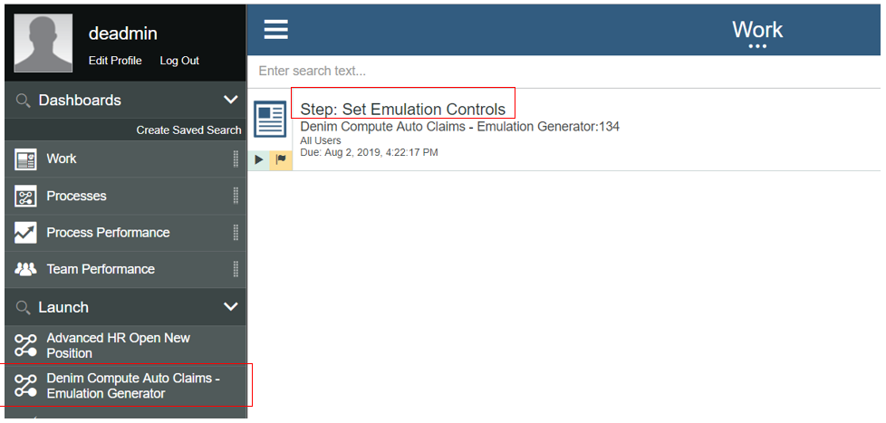
The user interface coach is displayed allowing for configuring options to control the spread of emulated instances and how they then affect the business insights data that will be later viewed in BAI. We will explain these settings a little later. 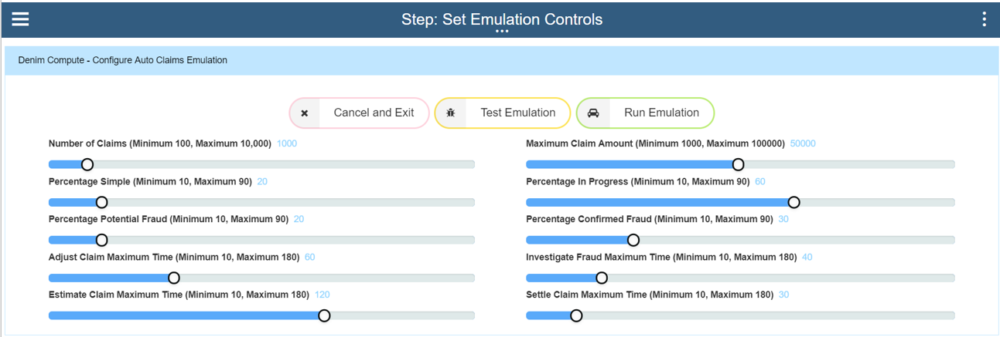
If this is being run for the first time in a IBM Cloud Pak for Automation environment it is a good idea to first verify the process behaves as expected without creating a lot of workflow instances. To do this set the Number of Claims to something like 300 instances (this will exercise the emulation's batch control which submits workflow instances in minimum batches of 100) and then choose the Test Emulation button option.
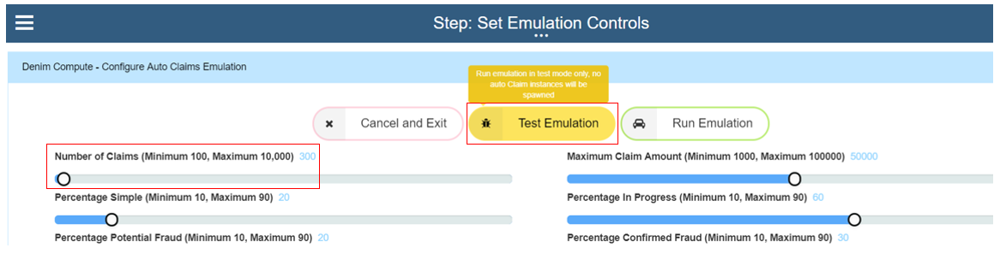
This will exercise a path through the workflow that does everything except for instantiating the instances (the logic has a feature flag switch that treats it as in test mode and skips the message event which will spawn workflow instances). To verify the test you access the workflow instance in Process Inspector within the Process Admin Console as shown below.

As the test emulation progresses you will see data variables set including the batch of emulated Auto Claim business objects (one instance is expanded in the list below for illustration).
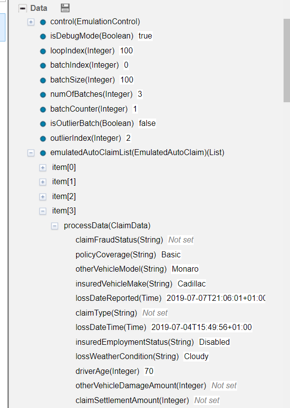
The emulation workflow instances may take a few minutes to complete depending on the total number of claims that were specified as the logic organises the data into batches with a timed delay between them. When the emulation workflow instance has completed (which can be verified in Process Inspector) and we are satisfied it behaves as expected we can then relaunch the workflow and this time submit a real emulation run. Here in this first section we have set Number of Claims to 500 and the Maximum Claim Amount to 50000. (Please be aware that the more instances that are created here the more work for BAW operations team to clean up afterwards and purge the completed instances. Also the more instances requested the higher the relative load on the system so we recommend you exercise due care here and not unduly load a system that might have other business-critical workloads on it. If in doubt check with your operations team).
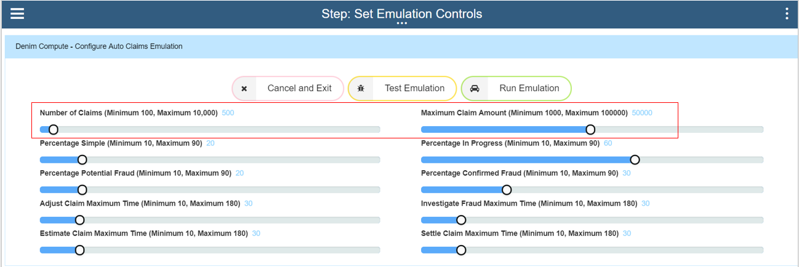
The next set of settings control the spread of paths through the Auto Claims workflow. Simple scenarios do not have any adjustment, fraud checking etc and so we set a relatively low figure for this. Next the Percentage in Progress setting controls the spread of items that have emulated delays in processing (so that later, in BAI Dashboards, you can see interactively how active instances behave and the changes that occur as they move through their lifecycles). Percentage Potential Fraud emulates the path in the workflow whereby the call out to ODM rules determines whether there is a potential fraud situation that needs investigating. The Percentage Confirmed Fraud setting then controls what percentage of those potential frauds have been determined to be actual frauds (the rest will end up as being cleared of fraud).
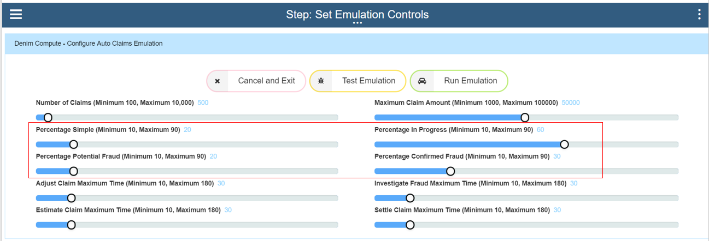
The final section controls the time delays for each part of the workflow that is not straight-through processing (STP). Here in the settings 30 minutes delay is set for each so it will configure variable times up to that maximum, this should mean that all 500 instances will have completed in approximately 2 hours elapsed time. 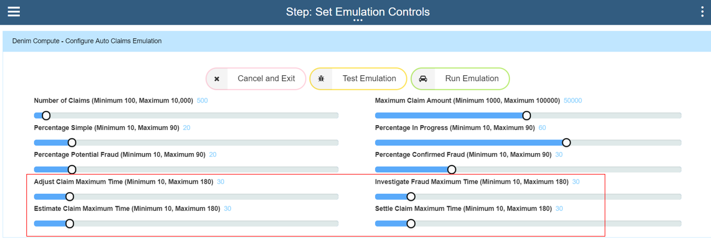
We can visualize this in the BAW emulation workflow itself where the items color-coded green are STP and those in orange are the human interaction steps which matches how the main scenario behaves. 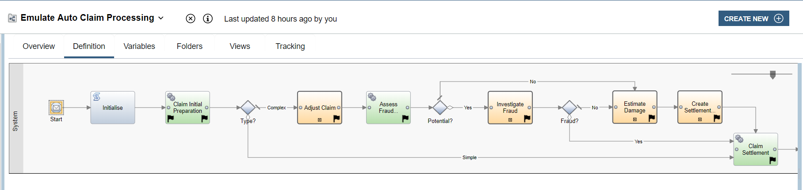
Once satisfied with the settings the request is submitted by clicking the Run Emulation button option.
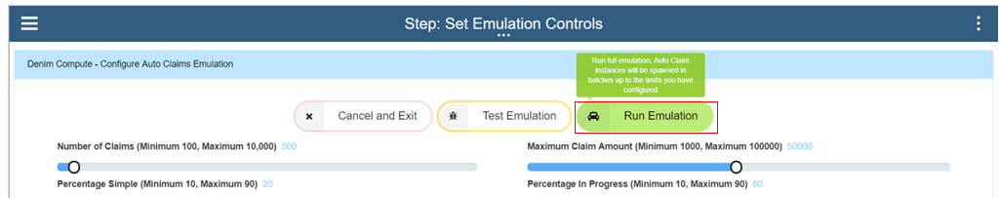
After giving it a few minutes you should start to see the instances getting created and registering in Process Inspector, as shown here.

Business Automation Insights
When new tracking data fields are first encountered in BAI (in Elasticsearch) the index pattern that we want to use needs to be refreshed to pick up those field definitions. This is done from the Kibana console by clicking Management then Index Patterns and selecting the index pattern you are using, which in this scenario is the process-s* entry. Then click on the Refresh icon as highlighted below and confirm.

Next we want to confirm that the events have been received in BAI from BAW and we can see some of the process summaries. We do this by moving to the Discover section in Kibana and then select the Search named Denim Compute - Auto Claims All Processes (you can do this by choosing the Open option and then filtering and finding the target Search definition). The screenshot below shows a point in time view of this Search where it has retrieved 193 hits. Highlighted are the active Filters used to identify the process summaries of interest for our scenario.

Note if you are following along in your own environment and you do not see any hits, make sure you have followed the instructions in the Scenario installation section of this document and in the OpenShift BAI installation section.
At this point, we are ready to start examining the configured Dashboards in Kibana. Here from the dashboard section we Open the one named Denim Compute - Active Auto Claims and there we see some visualizations have been configured and arranged on the dashboard. Additionally highlighted is a feature in Kibana where you can set the dashboard to Auto Refresh and set a frequency. You can then also pause and play if you want to halt the refreshes in order to examine something in detail. Also note that there is a breadcrumbs trail that allows for switching between the various dashboards that will be used for the scenario.

Scrolling down the page we can see some variations in types of visualization and the aggregated data that is displayed on them to highlight certain trends such as the influence of the Weather Condition on the estimate value of the claim. We also have a chart for tracking at what lifecycle stage various in-flight claims are (Active Claims by Age and Status).
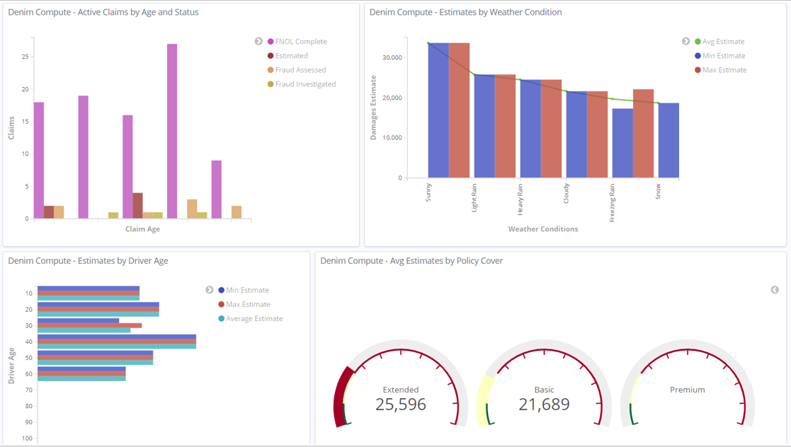
As the Active Claims by Age and Status X-axis legend is hard to see with the restricted space you can maximise that visualization (from the contextual menu on it) to see it in more detail.

You can also use the contextual menu to inspect the underlying data for a visualization and even export it out in CSV format. 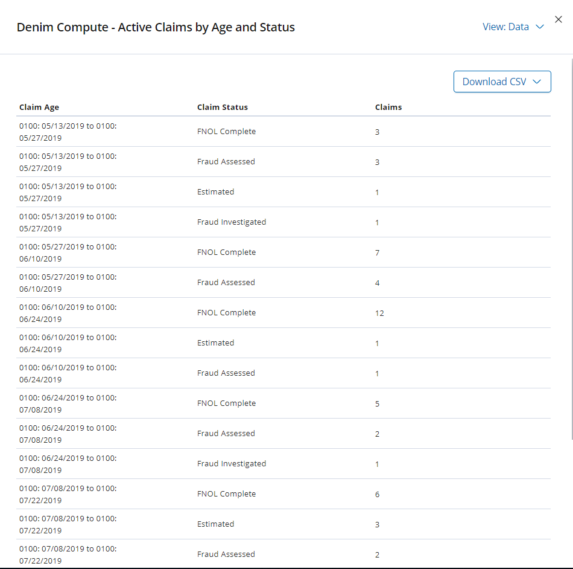
After returning back to the main dashboard view, at the bottom of the page are some data table types of visualization that shows the breakdown of claims by the Vehicle Make for both the insured party and the third party involved.
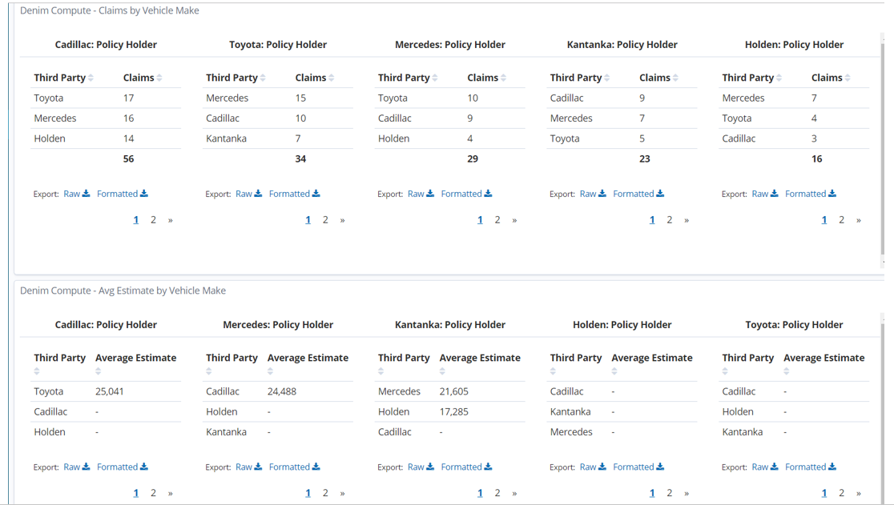
Next we want to look at a different dashboard that focuses on completed instances, so do that by clicking the Completed Auto Claims breadcrumb link. This dashboard is named Denim Compute - Completed Auto Claims (note how it has a filter configured that checks that the completedTime exists). In this dashboard we can now show Claim Settlement figures and compare them to the Damage Estimates.

Similar to the previous dashboard, this one uses various Visualizations but this time it focuses on the aggregation of Claim Settlement figures against various dimensions. Also notice that there is a Pie Chart that highlights the breakdown of claims into whether Fraud was suspected or not and then whether it was confirmed or cleared following investigation. We will see later that there is a further dashboard dedicated to the area of suspected fraudulent claims.

We again use the set of Gauges that focus on the Policy Cover dimension.

In the bottom section of the dashboard we again see the Data Tables organised by Vehicle Make and again focussing on Claim Settlement data.
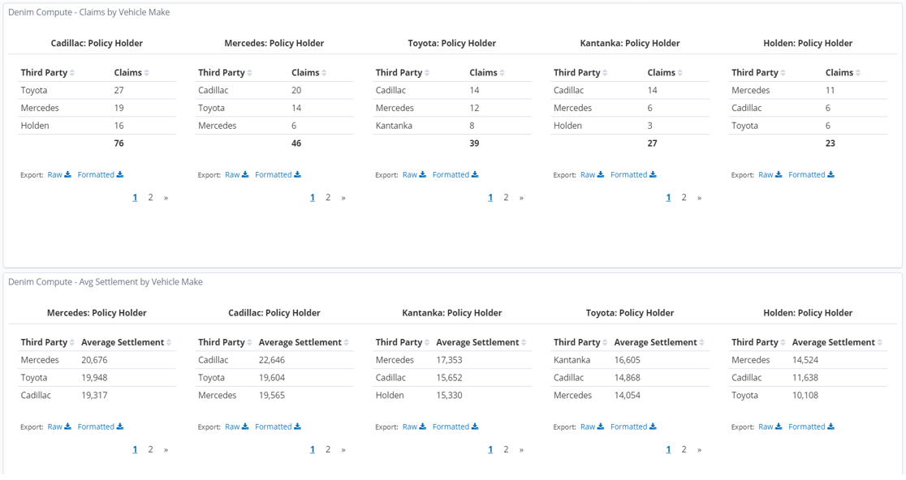
With the visualization named Settlements by Driver Age opened in full screen mode we highlight one of the bars and can see the underlying data, in this case it is reflecting the age profiles (in the emulation we deliberately allocate more claims to certain higher risk age groups).

Next we change to the dashboard named Denim Compute - Suspected Fraudulent Auto Claims (accessed by clicking on the Suspected Fraudulent Auto Claims breadcrumb).
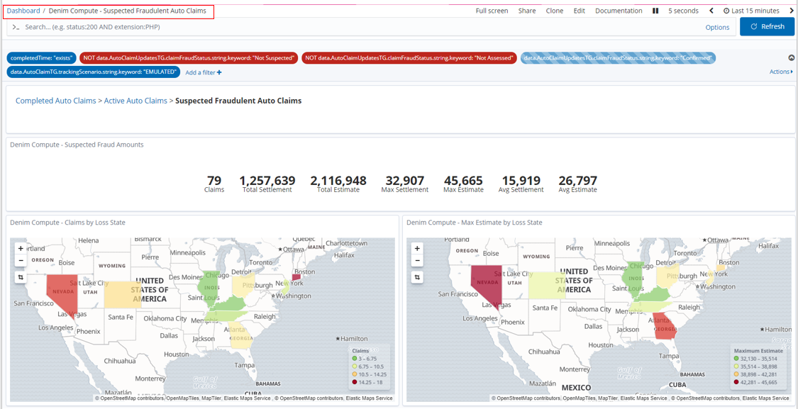
It has a small subset of the Visualizations just to illustrate that we can look at similar data but filtered to the subset of data that involves potential and investigated fraud cases.

The dashboard is pre-configured with a filter that is disabled by default. This filter will allow us to find only those potential frauds that were confirmed by investigation.

So to enable this we hover over the filter where the options become visible, in this case we want the one to Enable filter.
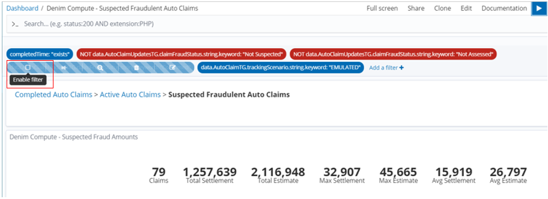
The result is then dynamically updated in the dashboard and we can see in this example that of the 79 potential frauds in fact 20 were confirmed (and of course in that case the Claim Settlement figures are 0 as no payment is made for fraud cases).
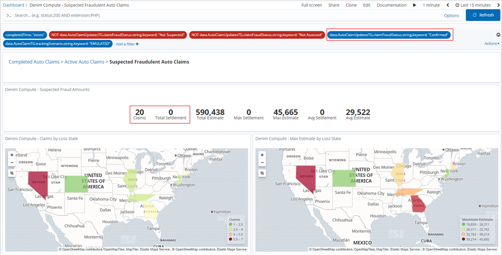
We can also switch the filter to Exclude matches which in this case is looking for data on all potential frauds that were not proven
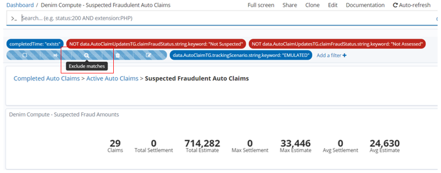
Again the dashboard refreshes to take account of the changed filter and we see that 59 claims were not proven and in this case they do have payments made that are shown in the Claim Settlement figures.
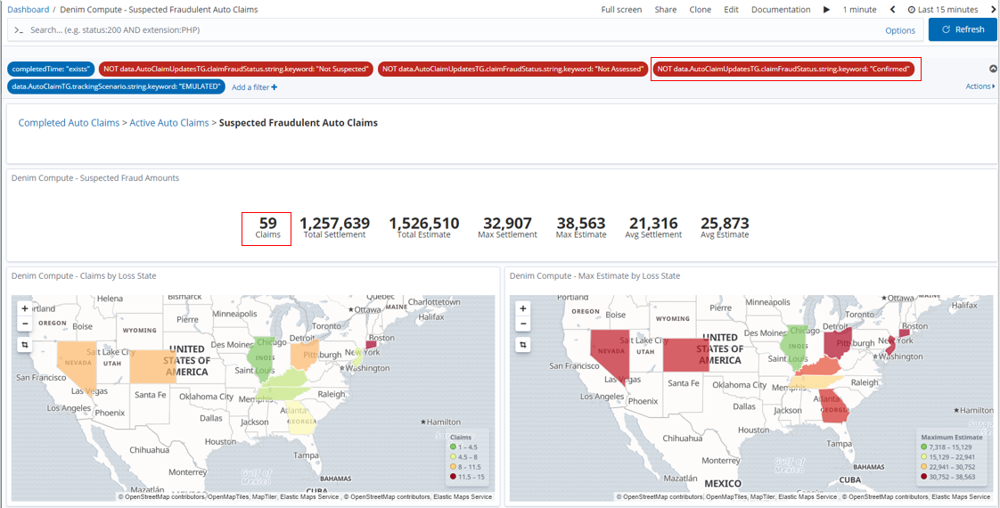
Once the emulation batch of 500 instances have completed in Denim Compute - Completed Auto Claims we now notice that there is an anomaly with the maximum amounts. This is because the emulation logic deliberately throws an "outlier" case into every execution run so that we can highlight here in the dashboard. We also highlight below that the skewed figure is in the state of Florida.

If we select that state in the Region Map a dynamic filter is added and applied so that the dashboard now shows data just for that state.
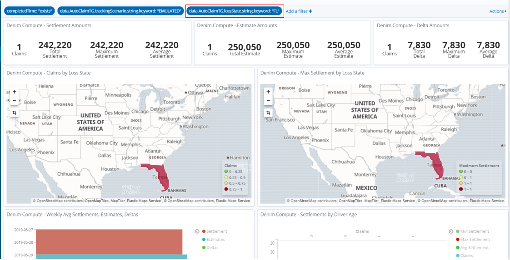
We can also use Exclude matches as we saw before on this new filter and this allows us to examine the various dimensions without the false trends that the outlier case was contributing to.

Back in the Discover section and with the Search set to Denim Compute - Auto Claims All Processes we can filter for and examine the outlier case. By default a filter on the state of FL has been provided and disabled so you enable that and it should then show just that one outlier instance.

You can then expand the twisty against the row and it will allow inspecting the data in a table or as raw JSON. 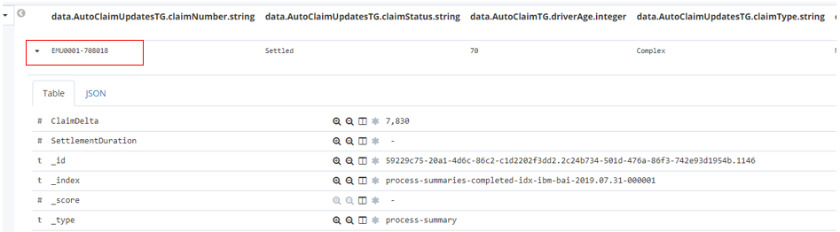
You now can see all the tracking data that was summarised into this process summary from the events sent to BAI from BAW. Take a look at some of the key data items and see if you can figure out what unusual set of circumstances led to this large claim and especially the high differential in damage amounts between the two vehicles involved. Also note that no fraud was suspected (see the highlighted tracking field below) even in such odd claim data, this is because the emulation uses random spreads of data and does not use any in depth intelligence in identifying and investigating fraud cases. In a later iteration, we will start infusing machine learning into this scenario in order to greatly improve this situation. 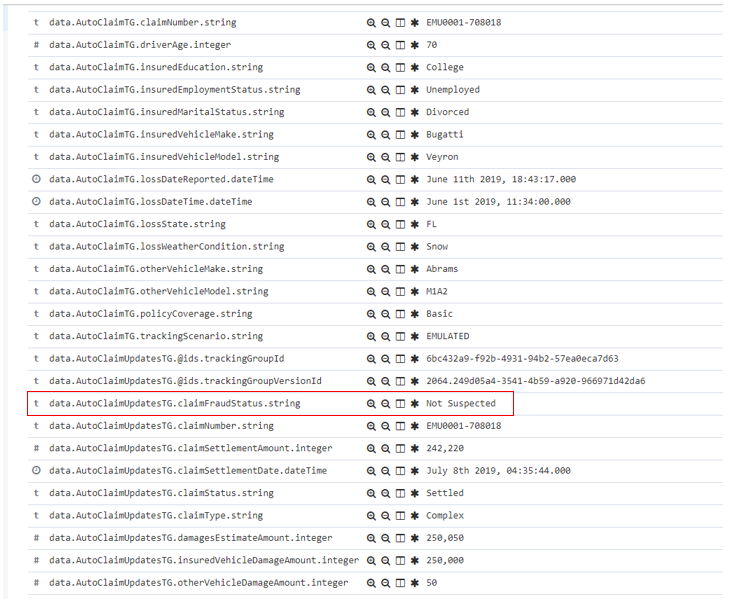
Scenario installation
Prerequisites
You should have installed the Cloud Pak for Automation as instructed in the various installation guidance documents in the OpenShift environment section.
BAW application installation
-
Install the application
auto-claims-emulation-bai.twxfile into your environment (confirm that it is the version shown below or higher): 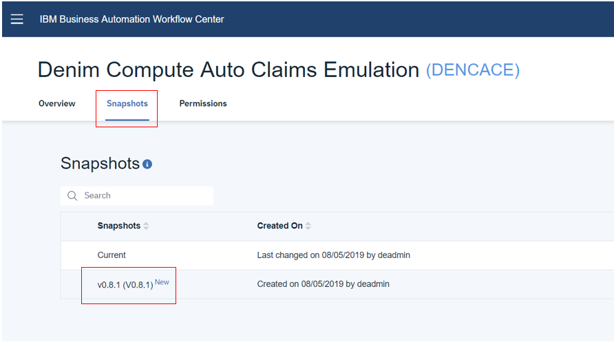 -
Now you should have the exposed process that can be launched from
Process Portalas shown below. 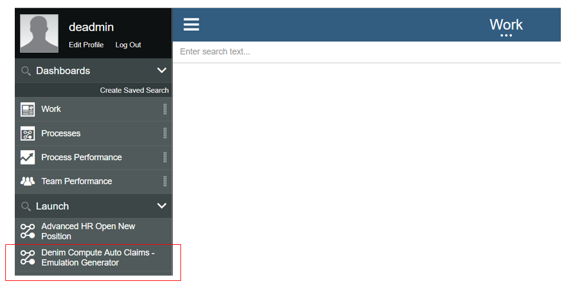
BAI Kibana saved objects installation
-
In your BAI Kibana console navigate to
Management,Saved Objectsand clickImport.
-
Select the saved index pattern definition downloaded from
dc-bai-custom-index-pattern.jsonand clickImport. This will import a custom index pattern especially forDenim Computewhich is configured with formatting of data fields and includes scripted fields.
-
When imported navigate to
Index Patternsand selectprocess-s*and verify that there are 3Scripted fields(ignore the number againstFieldswhich may be different in your environment).
-
Repeat the previous steps to import the definitions downloaded from
dc-bai-dashboards-and-related.json.
-
Now when you filter against
Denim, you should be able to see the imported objects (33 in total).
You now should have all you need to run the scenario as described earlier in this document.